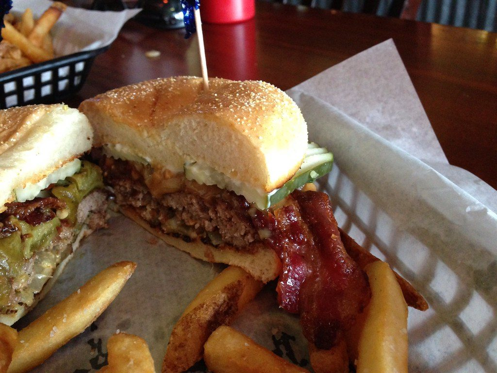
Smash Co.
La hamburguesa al paso: ingredientes premium, procesos ágiles y precios accesibles, con la calidad de siempre y la velocidad del fast food.
Ver la cartaInicio / Nosotros
Hacer la hamburguesa que nos gustaba comer y servirla en un lugar donde dé ganas de quedarse. Todo lo demás vino después.
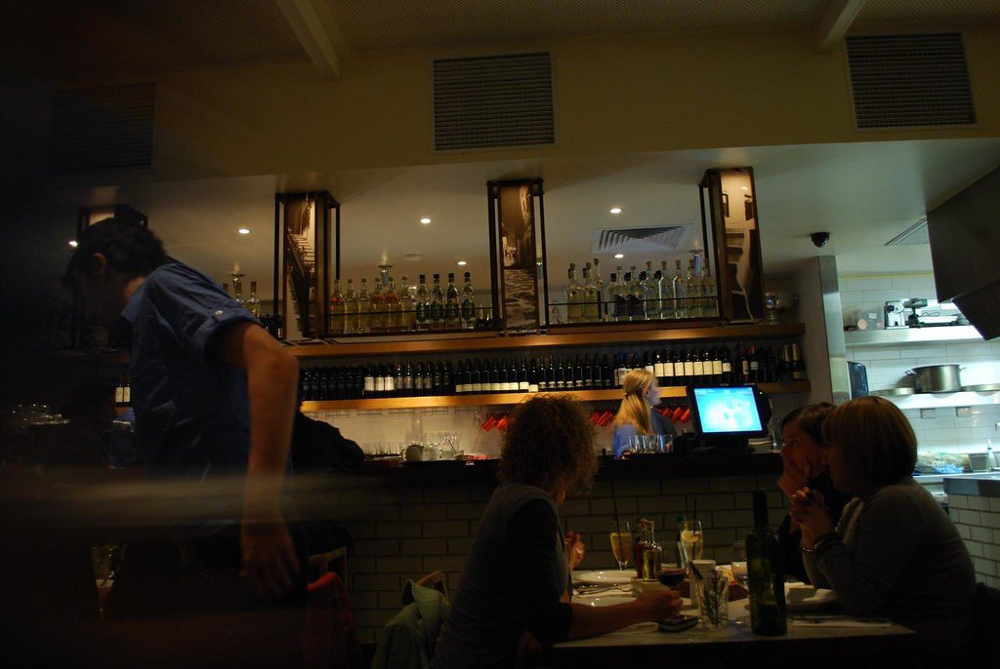
Quiénes somos
Abrimos el primer local en 2017 con muy poca plata y una idea clara: hamburguesas artesanales, sin conservantes, hechas al momento y servidas con buena música y cerveza tirada.
Hoy tenemos un centro de producción propio que abastece a cada local, camiones que reparten todos los días y una red de franquicias que sigue sumando ciudades.
Lo que no cambió es la plancha: cada hamburguesa se sigue aplastando a mano, de a una, cuando la pedís.
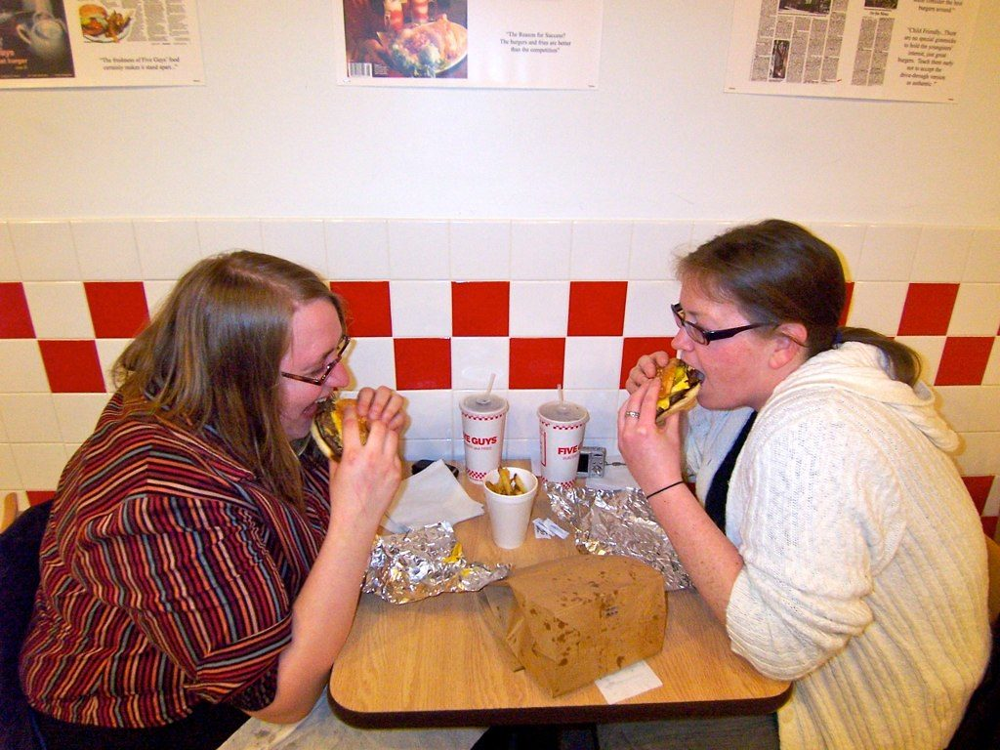
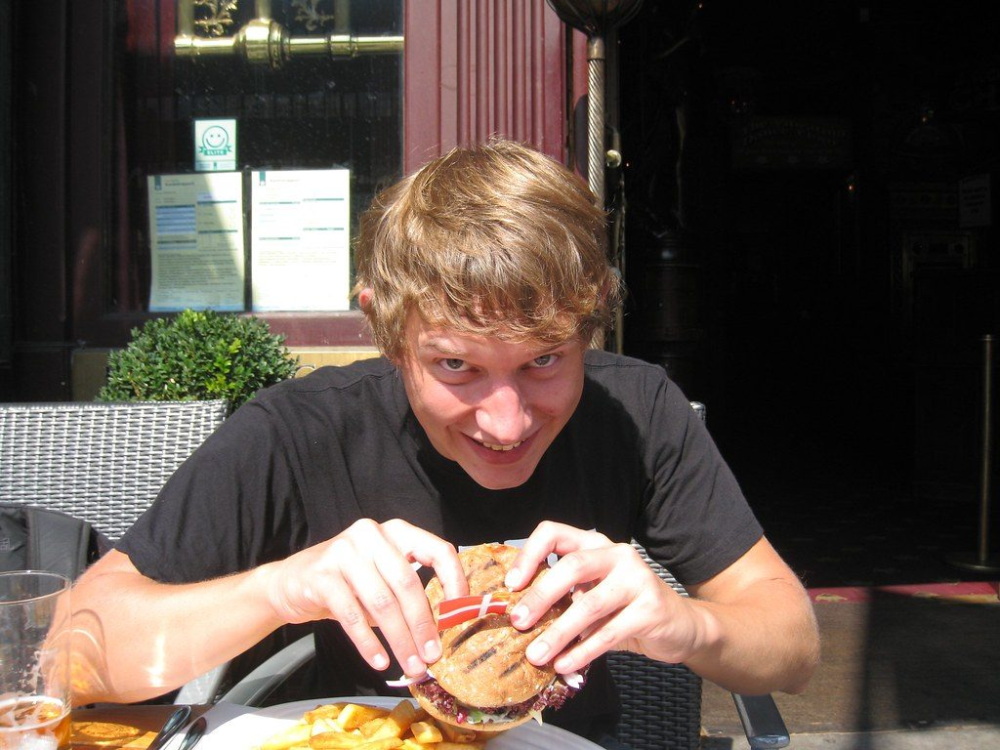
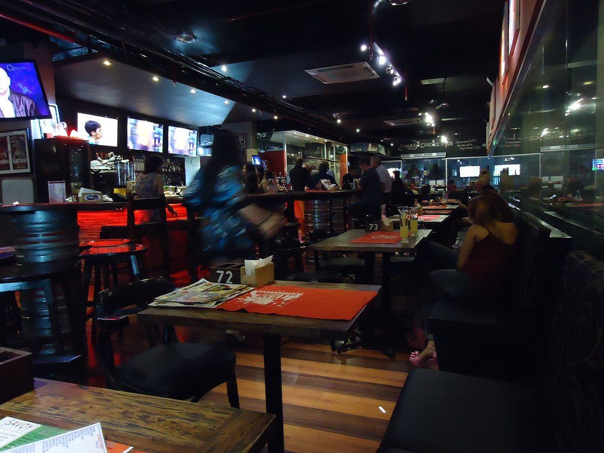
Cada hamburguesa se aplasta a mano, de a una, cuando la pedís.
La regla número uno de la cocina
Bitácora de viaje
Algunos hitos del camino, de la primera plancha a la red de franquicias.
Abre el primer local con una carta corta: simple, doble y papas.
Sumamos canillas propias y la cerveza tirada pasa a ser parte de la experiencia.
Armamos el centro de producción para que cada local tenga el mismo sabor.
Y la meta de seguir creciendo sin tocar la receta.
Galería
Platos recién salidos, la barra llena y las papas desparramadas en la bandeja.
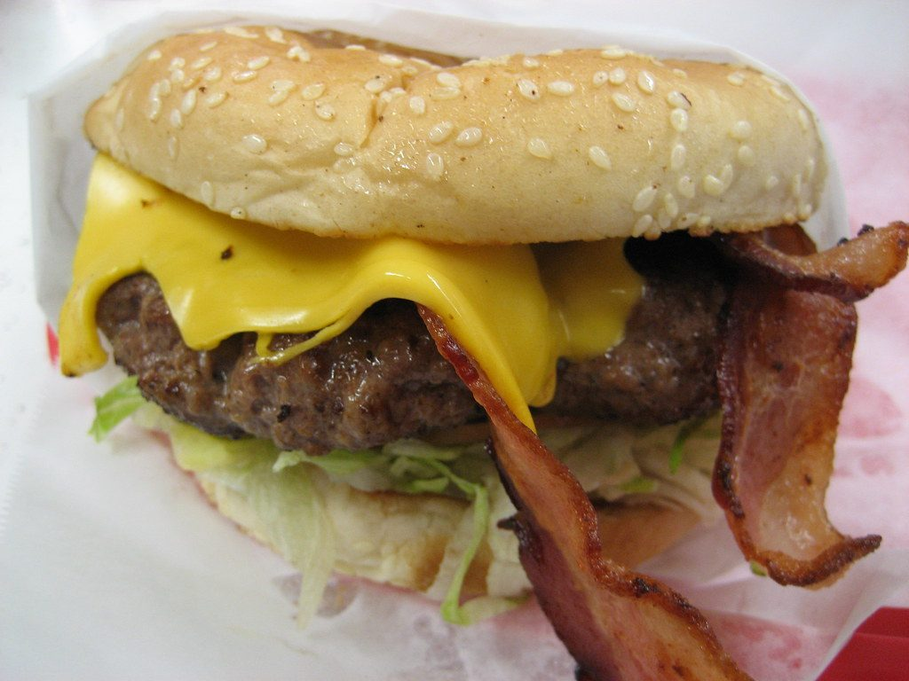
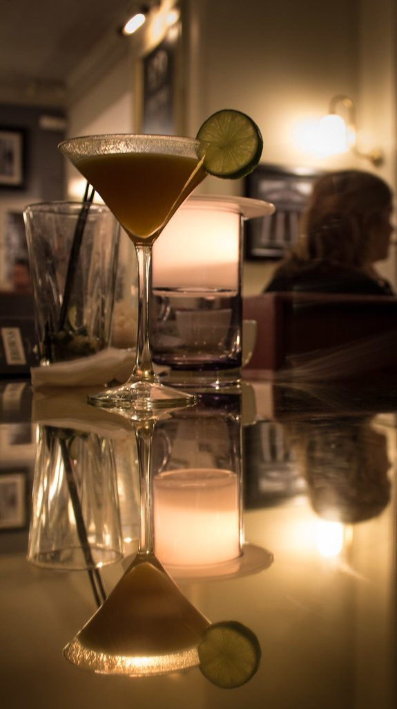
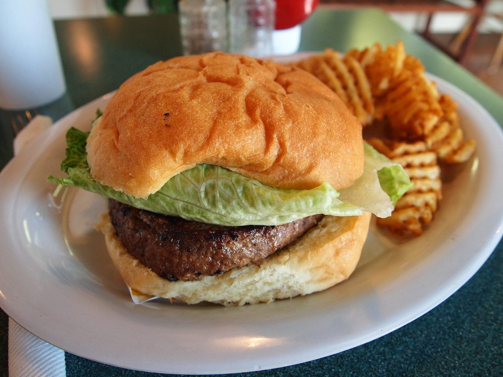
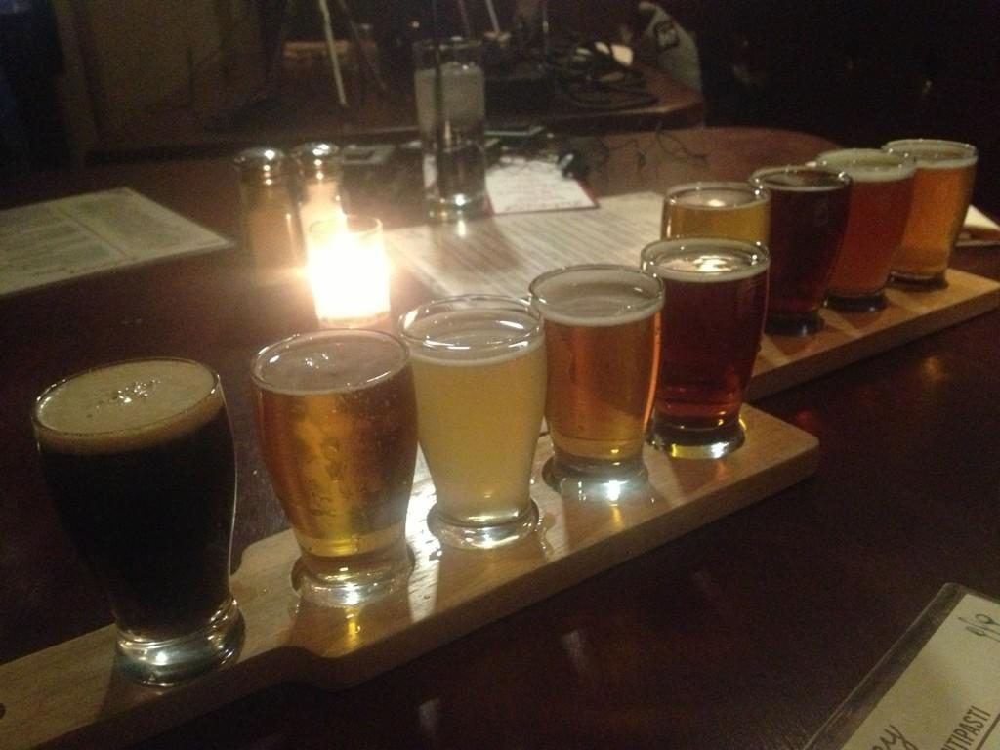
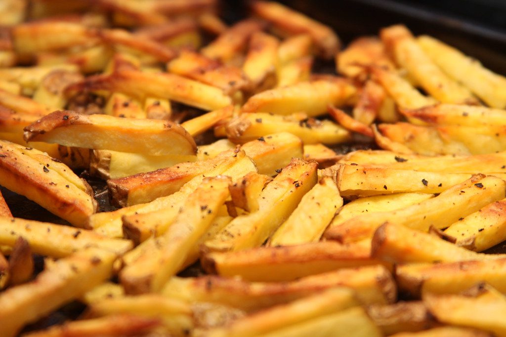
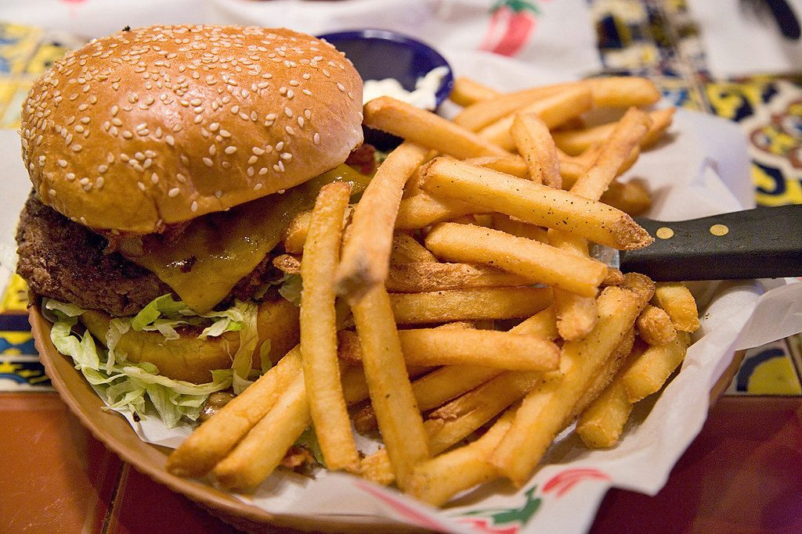
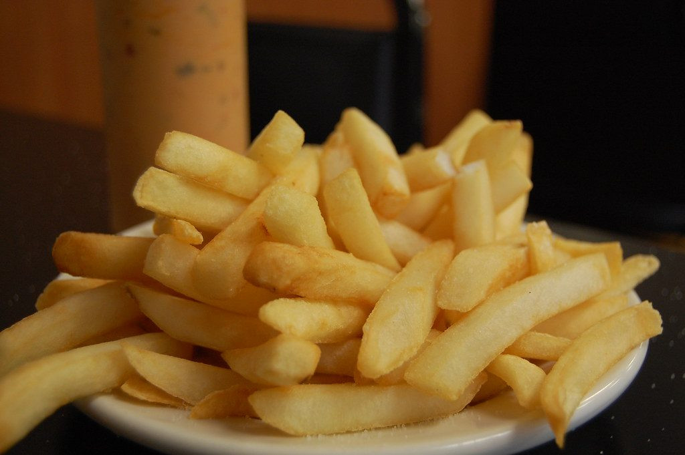
El grupo

La hamburguesa al paso: ingredientes premium, procesos ágiles y precios accesibles, con la calidad de siempre y la velocidad del fast food.
Ver la carta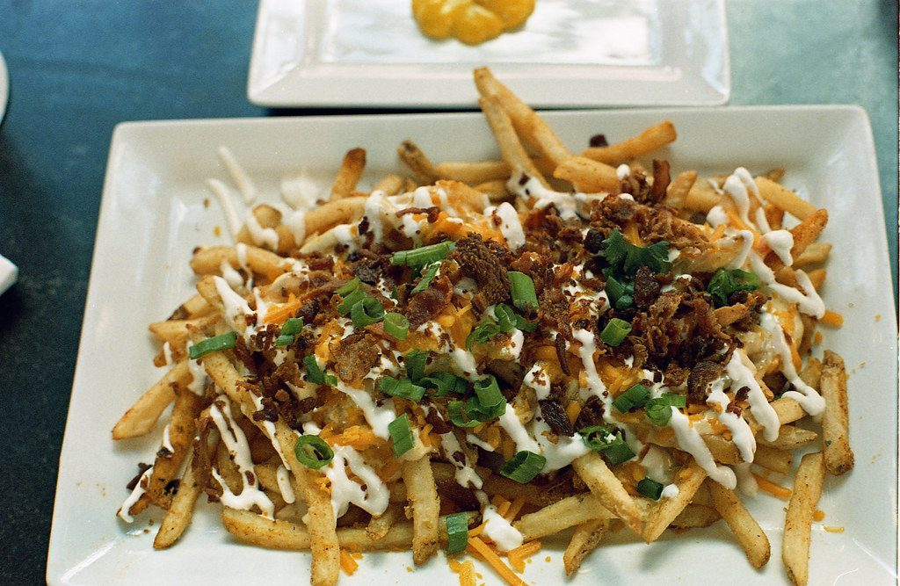
Papas cortadas en casa, cargadas como corresponde, y milanesas abundantes con ese gusto casero de siempre.
Ver la cartaPlancha caliente desde el mediodía hasta tarde. Vení con hambre, pedí una doble y quedate a la segunda pinta.